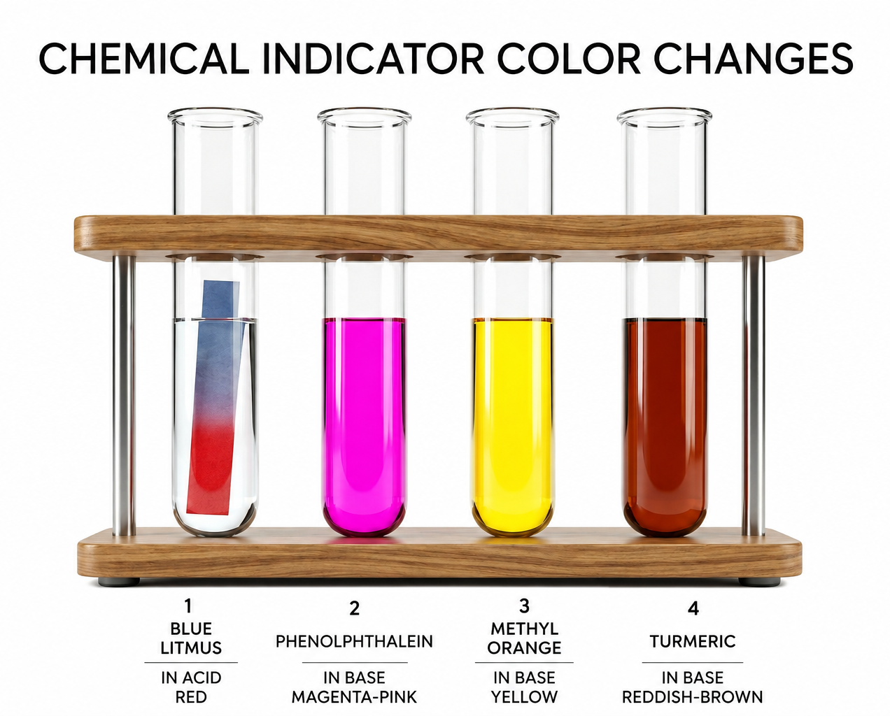
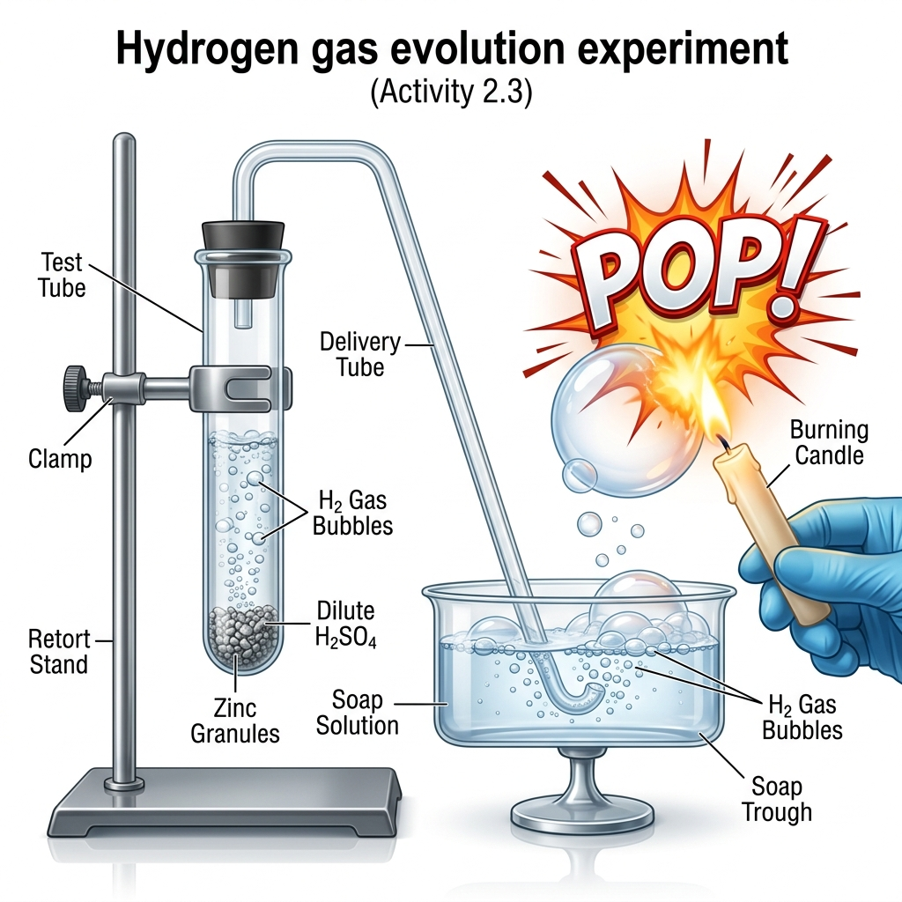
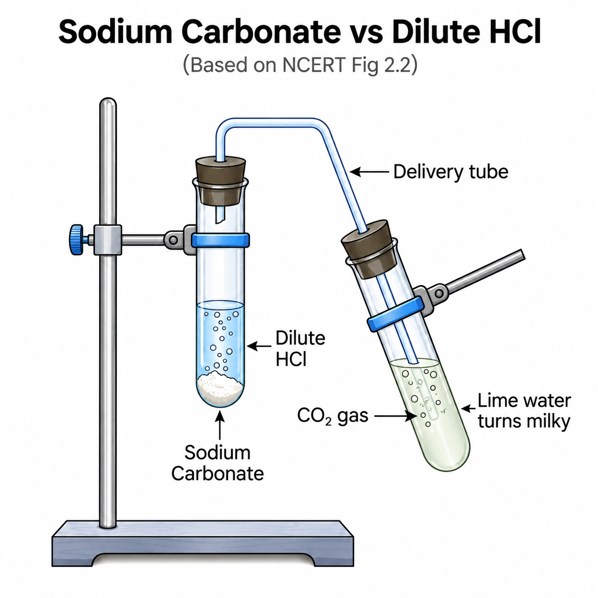
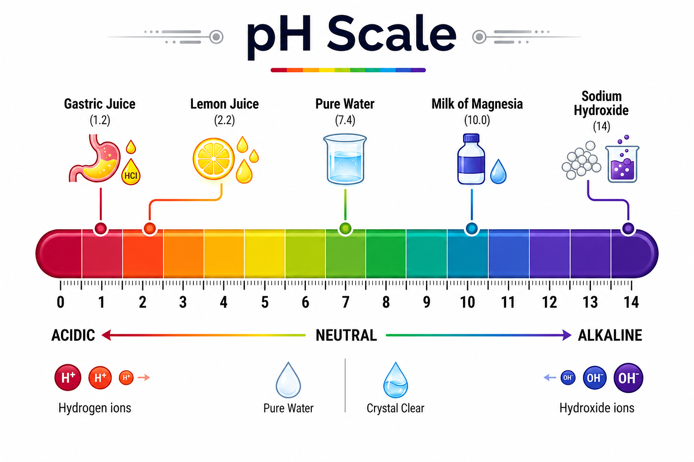
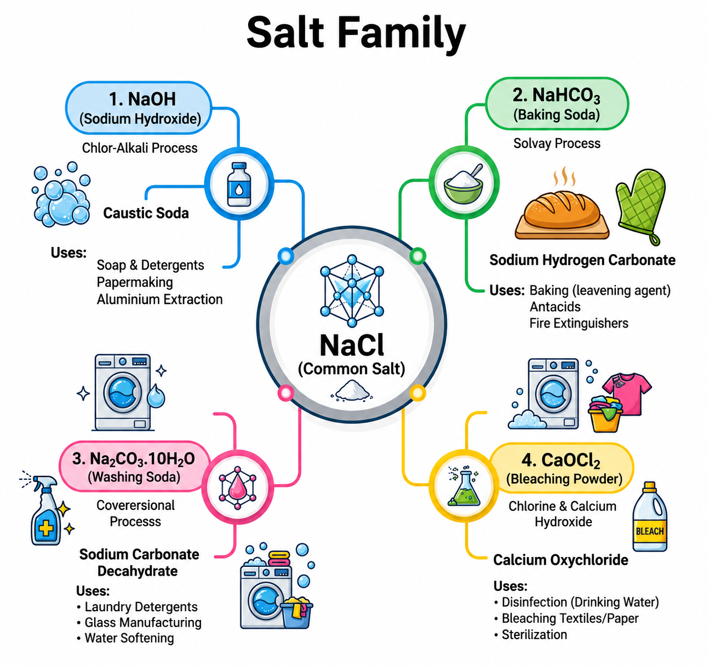
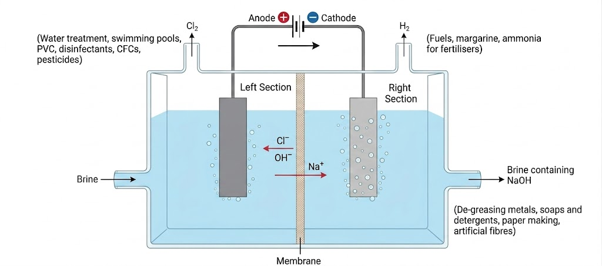
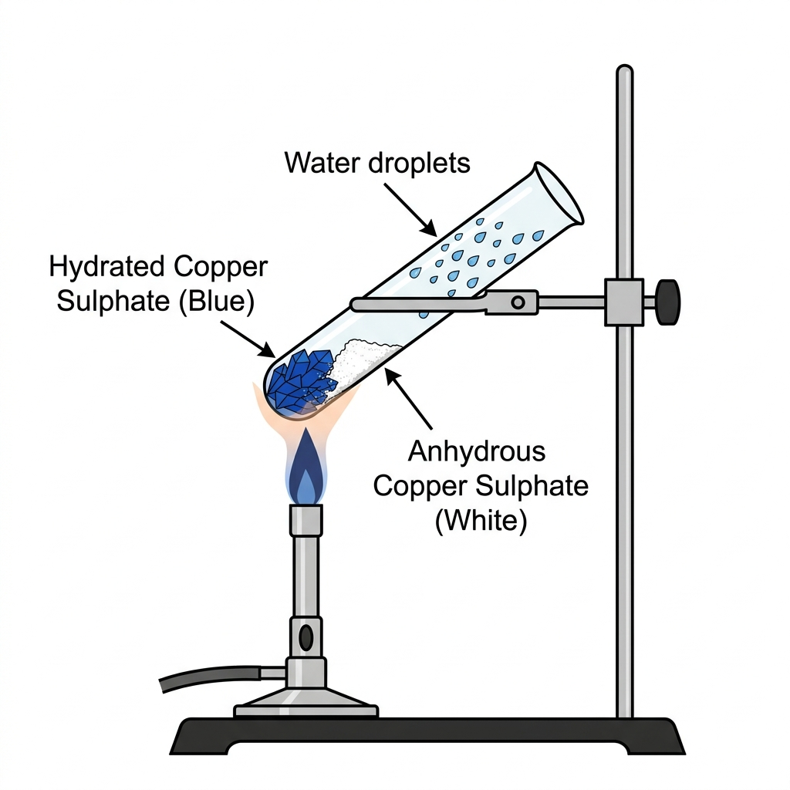

Chapter 02 | High-Fidelity Board Study Module
Indicators are chemical substances that change their properties (color or smell) when exposed to an acid or a base.
Deep-Cut Fact: Litmus is a purple dye extracted from Lichen, a plant belonging to the Thallophyta division.
Procedure: Test various acid and base samples (HCl, NaOH, etc.) with different indicators.
Observation:
• Acids: Blue Litmus → Red; Phenolphthalein → Colorless.
• Bases: Red Litmus → Blue; Phenolphthalein → Pink.
| Indicator Type | Example | Color in Acid | Color in Base |
|---|---|---|---|
| Natural | Litmus Solution | Red | Blue |
| Natural | Turmeric | Yellow (No Change) | Reddish-Brown |
| Synthetic | Phenolphthalein | Colorless | Deep Pink |
| Synthetic | Methyl Orange | Red/Pink | Yellow |
| Natural (Flowers) | Hydrangea | Blue | Pink |
| Natural (Flowers) | Petunia / Geranium | Reddish/Violet | Blue |
Definition: Substances whose **odour (smell)** changes in acidic or basic media.
Procedure: Test finely chopped onions, vanilla essence, and clove oil with dilute HCl and NaOH.
Key Observations (Board Favorite):

Fig: Color variations in common indicators
Understanding how acids and bases interact with different substances is crucial for predicting products and identifying unknown compounds.
Procedure: Add Zinc granules to dilute $H_2SO_4$ (Acid) and then to $NaOH$ (Base).
Key Observations:

Procedure: Add HCl to Sodium Carbonate (Test Tube A) and Sodium Bicarbonate (Test Tube B). Pass the gas through Lime Water.
The Chemical Reactions:
The Lime Water Test (CBSE Classic):

Note: Limestone, chalk and marble are different forms of Calcium Carbonate ($CaCO_3$).
Concept: When an acid and a base react, they cancel each other's effects to form Salt and Water.
Reaction: $NaOH(aq) + HCl(aq) \rightarrow NaCl(aq) + H_2O(l) + \text{Heat}$
Observation: The reaction is exothermic. Using phenolphthalein, the pink color disappears when the acid neutralizes the base.
Observation: Black Copper Oxide ($CuO$) dissolves in HCl to form a blue-green solution of Copper Chloride ($CuCl_2$).
Conclusion: Since metallic oxides react with acids to give salt and water, they are Basic in nature.
This section explores the behavior of acids and bases at the molecular level, focusing on ion formation.
Experiment: Test conductivity of Glucose, Alcohol, HCl, and NaOH solutions.
Result:
• The bulb glows for HCl and NaOH because they dissociate into ions ($H^+$ and $OH^-$).
• The bulb does NOT glow for Glucose ($C_6H_{12}O_6$) and Alcohol ($C_2H_5OH$) as they do not form ions.
Inference: Only substances that ionize in water act as acids or bases.
Experiment: Test dry HCl gas with dry and wet blue litmus paper.
Observation:
• Dry Litmus: No color change.
• Wet Litmus: Turns Red.
Conclusion (Board Exam Point): HCl dissociates into $H^+$ ions only in the presence of water. Separation of $H^+$ ions from $HCl$ molecules cannot occur in the absence of water.
Formation of Hydronium Ions:
When a base is dissolved in water, it generates Hydroxide ($OH^-$) ions:
Concept: Dissolving an acid or a base in water is highly Exothermic.
The Rule: Always add Acid to Water slowly with constant stirring.
Warning: Never add water to acid! The extreme heat generated can cause the mixture to splash out (causing burns) or break the glass container.
Mixing an acid or base with water results in a decrease in the concentration of ions ($H_3O^+$ or $OH^-$) per unit volume. This process is called Dilution.
A scale for measuring hydrogen ion concentration in a solution, called pH scale, has been developed. The 'p' in pH stands for potenz in German, meaning power.

Fig: The Universal pH Scale Gradient
Procedure: Test various solutions with Universal Indicator paper.
| Substance | Approx. pH | Nature |
|---|---|---|
| Gastric Juice | 1.2 | Highly Acidic |
| Lemon Juice | 2.2 | Acidic |
| Pure Water/Blood | 7.4 | Slightly Basic |
| Milk of Magnesia | 10.0 | Basic |
| Sodium Hydroxide | 14.0 | Highly Basic |
Concept: Plants require a specific pH range for healthy growth. If soil is too acidic, it is treated with Quick Lime ($CaO$) or Slaked Lime ($Ca(OH)_2$). If too basic, organic matter is added.
Did you know? The atmosphere of Venus is made of thick white and yellowish clouds of Sulphuric Acid. Survival of life is impossible there!
| Context | Board Importance & Facts |
|---|---|
| Acid Rain | When rain water pH is less than 5.6. It makes survival of aquatic life difficult. |
| Digestive System | Stomach produces HCl. During indigestion, excess acid causes pain. Antacids (like Milk of Magnesia) are mild bases used to neutralize it. |
| Tooth Decay | Starts when mouth pH falls below 5.5. Tooth enamel is made of Calcium hydroxyapatite (crystalline calcium phosphate)—the hardest substance in the body. It doesn't dissolve in water but corrodes when pH is low. |
| Self Defense | Honey-bee sting leaves Methanoic Acid. Rubbing a mild base like Baking Soda provides relief. |
| Nettle Sting | Nettle leaves inject Methanoic acid. Traditional remedy: Rubbing the leaf of a Dock Plant (Basic) which often grows beside Nettle in the wild. |
For board exams, you must memorize the source and the specific acid present in these natural substances:
| Natural Source | Acid | Natural Source | Acid |
|---|---|---|---|
| Vinegar | Acetic acid | Curd (Sour Milk) | Lactic acid |
| Orange | Citric acid | Lemon | Citric acid |
| Tamarind | Tartaric acid | Ant sting | Methanoic acid |
| Tomato | Oxalic acid | Nettle sting | Methanoic acid |
Nettle is a herbaceous plant which grows in the wild. Its leaves have stinging hair, which cause painful stings when touched accidentally. This is due to the Methanoic acid secreted by them.
Traditional Remedy: Rubbing the area with the leaf of the Dock Plant, which often grows beside the nettle in the wild. Since it cures the sting, we can guess that the dock plant is Basic in nature.
Salts are formed by the neutralization of an acid and a base.
NCERT Note: Rock Salt crystals are often brown due to impurities. These salt beds were formed when seas of "bygone ages" dried up. It is mined like coal.
Concept: Salts can be classified into families based on their radicals (e.g., Chloride family, Sulphate family).
| Salt Combination | Nature | pH |
|---|---|---|
| Strong Acid + Strong Base | Neutral | 7 |
| Strong Acid + Weak Base | Acidic | < 7 |
| Weak Acid + Strong Base | Basic | > 7 |
Common salt is a critical raw material for various chemicals used in daily life and industry.

Fig: The NaCl Derivative Ecosystem (The Salt Family)
Method: Electrolysis of aqueous solution of $NaCl$ (called Brine).
Equation: $2NaCl(aq) + 2H_2O(l) \rightarrow 2NaOH(aq) + Cl_2(g) + H_2(g)$

Preparation: Action of chlorine on dry slaked lime [$Ca(OH)_2$].
Equation: $Ca(OH)_2 + Cl_2 \rightarrow CaOCl_2 + H_2O$
Uses:
• Bleaching cotton/linen in textiles and wood pulp in paper.
• Oxidizing agent in chemical industries.
• Disinfecting drinking water.
Chemical Name: Sodium Hydrogen Carbonate.
Preparation: $NaCl + H_2O + CO_2 + NH_3 \rightarrow NH_4Cl + NaHCO_3$
Heating Effect: $2NaHCO_3 \xrightarrow{\text{Heat}} Na_2CO_3 + H_2O + CO_2\uparrow$
Uses: Making baking powder (Soda + Tartaric acid), Antacid, Soda-acid fire extinguishers.
Preparation: Recrystallization of Sodium Carbonate.
Equation: $Na_2CO_3 + 10H_2O \rightarrow Na_2CO_3 \cdot 10H_2O$
Uses:
• Glass, soap, and paper industries.
• Manufacture of Borax.
• Removing permanent hardness of water.
Chemical Name: Calcium Sulphate Hemihydrate ($CaSO_4 \cdot \frac{1}{2}H_2O$).
Preparation: Heating Gypsum ($CaSO_4 \cdot 2H_2O$) at 373 K.
The "Half Molecule" Logic:
Q. How can you get half a water molecule?
Ans: It is written in this form because two formula units of $CaSO_4$ share one molecule of water . This is why it's called a hemihydrate.
Setting (Reaction with Water): On mixing with water, it changes back to Gypsum, giving a hard solid mass.
Uses: Supporting fractured bones, making toys, decoration, smooth surfaces.

Experiment: Heat crystals of Copper Sulphate in a dry test tube.
Observation:
• Blue color of crystals turns White.
• Water droplets appear on the sides of the tube.
• On adding water again, the Blue color reappears.
Definition: Water of Crystallization is the fixed number of water molecules present in one formula unit of a salt.
Example: Hydrated Copper Sulphate ($CuSO_4 \cdot 5H_2O$).
Sure-Shot Board Topic: The Lime Water Test
Expect a question on why milkiness disappears with excess $CO_2$. Always mention the formation of soluble Calcium Bicarbonate [$Ca(HCO_3)_2$].
Common Confusion: Alkali vs Base
Remember: "All Alkalis are Bases, but all Bases are not Alkalis." Only water-soluble bases like $NaOH, KOH, Ca(OH)_2$ are alkalis.
Conceptual Logic: Ionization
Acids do NOT show acidic behavior in organic solvents like Toluene or Alcohol because they don't produce $H^+$ ions there. Water is a MUST.